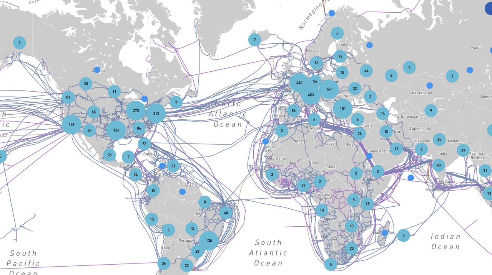

What is the Internet?

The Internet (or internet) is the global system of interconnected computer networks that uses the Internet protocol suite (TCP/IP) to communicate between networks and devices. It is a network of networks that consists of private, public, academic, business, and government networks of local to global scope, linked by a broad array of electronic, wireless, and optical networking technologies.
The communications infrastructure of the Internet consists of its hardware components and a system of software layers that control various aspects of the architecture. As with any computer network, the Internet physically consists of routers, cabling or radio links, repeaters, modems etc. An Internet Protocol address (IP address), a numerical label assigned to each device connected to a computer network, enables us to the Internet Protocol for communication and store/run data on the infrastructure.
The Internet carries many applications and services, most prominently the World Wide Web, including social media, e-mail, mobile applications, multiplayer online games, Internet telephony (calls), file sharing, and streaming media services.
Most servers that provide these services are today hosted in centralized data centers owned by a few large corporations. This centralized model is inefficient, as through it's centralized model, if the main servers go down, the whole system experiences downtime. Hundreds of downtime events have been recorded throughout the last few years. Also, given these companies own the data centers, they also own the data that is contained in them and use it for profit reasons.
The Internet Map
The Internet Map

Reference: infrapedia.com/app
More than 500 undersea cables and thousands more terrestrial networks connect us all together digitally. These cables carry our data between server and recipient. While satellites also play a role in connectivity, without cables it's safe to say the global Internet would not be what it is today.
TODO: complete how the internet works (added a bit of text here but it is pretty self-explanatory)
For more info about how the internet works see here
TODO: need to explain how cable go around the world and cary our information (done in internet_map, please review)
The Role Of Data Centers
The Internet Data Centers
Today the Internet is mainly delivered out of data centers, which are huge facilities containing up to millions of servers. They centralize shared IT operations and equipment for the purposes of storing, processing, and disseminating data and applications. Data centers have become a foundational necessity of today's Internet, but there are several significant issues with them:
Centralization
The GAFAM (Google, Amazon, Facebook, Apple and Microsoft) own 80% of the global compute and storage (and network) infrastructures. Also, this global infrastructure is concentrated in the U.S in large majority, as well as Europe and China. This means that most of today's Internet is out of reach of billions of people in developing nations particularly in South America, Africa, and parts of Asia.
Cost
It costs billions of dollars and enormous amounts of energy and time to build, manage and productize hyperscale data centers. Only the richest countries in the world build data centers and the rest of the world become their clients. To meet the projected growth of the Internet in 2022, $5 trillion would have to be invested with this model
Energy Consumption
Data centers are extremely power hungry, consuming over 2 trillion gigabytes of storage and consume around 205 TWh - More than the State of New York. According to statistics, the Internet consumes between 10-20% of global energy resources.
Security
The current IT stack depends on human error and it has been considered as the major cause of cybersecurity breaches with more than 95% of the cases. Human errors allow attackers to access encrypted channels and sensitive information
Cannot Support Future Demand
To meet projected demand for 2022, more than 4,000 new data centers, costing an estimated $5 trillion, will be needed to build and consume an additional 400 GW/h. This is roughly equivalent to Japan’s energy consumption and would place an impossible strain on the global electricity grid. The rising demand for Internet storage is already causing hardware shortages and price hikes.
TODO: Kristof please review
TODO: need to show and explain datacenters (done in internet_datacenters, please review)
Bandwidth Is Not Local
The Internet Needs To Be Local

The Internet today is constructed in a centralized way. The hyperscale data centers that form the backbone of the Internet's infrastructure play a massive role in our digital lives, and they are often located far from users, particularly those living in developing countries or regions. Each time we take an online action such as posting a photo or sending a message, the data is transmitted from our device to that centralized data center, and to the person or persons on the other end. So, you can begin to see how proximity to these servers plays a role in the end user experience.
Internet bandwidth refers to the amount of information or data that can be sent over a connection in a measured amount of time. Bandwidth is often mistaken for speed, but they are not the same. Whereas bandwidth is how much information you receive in a given time, speed is how fast that information is received.
Let's take the example of filling a swimming pool with water. If the hose has a wide circumference, more water can flow than if the hose were narrow. In this instance, water is the bandwidth and the rate at which the water flows is the speed.
There are many factors that go into both bandwidth and speed. An end-to-end network path usually consists of multiple connections, each with different bandwidth capacity. And the link with the lowest bandwidth can limit the overall capacity of all connections in the path. When data travels shorter distances, this is less of a factor. Network congestion (usage) is also a major factor. And it's pretty clear to see how by traveling long distances, this would become a bigger problem.
TODO: Kristof please review
For more info about how the Internet works see here.
TODO: need to show how bandwidth is not staying local (there is slide already) (done in internet_bandwidth, please review)